🧭 AI 构图指导
实时识别人脸与身体姿态，给出三分构图、黄金螺旋、留白、对称、三角布局等多规则评分与建议。
核心能力
实时识别人脸与身体姿态，给出三分构图、黄金螺旋、留白、对称、三角布局等多规则评分与建议。
基于 MediaPipe Pose 检测，分析头部、肩膀、手臂、重心等 7 个维度，给出 0–100 的综合姿势评分。
闪光灯、变焦 1×/2×/3×、HDR、EV 曝光补偿、人像虚化、连拍及 12 种场景预设，适应不同拍摄环境。
拍摄后可调整高光、阴影、饱和度、背景虚化、黄金轮廓描边，以及裁剪、旋转与翻转。
80+ 姿势模板叠加在取景框中，按人数 / 视角 / 标签筛选，快速辅助摆拍。
自动检测人物/静物场景，人像模式显示姿势评分与构图指导，静物模式提供构图建议与物体分类。
Step by Step
了解 StanzSnap 相机界面的每一个控制项，轻松拍出好照片。
点击画面任意位置即可对焦。双指捏合可平滑缩放，也可以点击焦距倍数快速切换 1× / 2× / 3×。
相机顶部控制栏从左到右排列，提供以下功能：
💡 虚化提示：相机虚化不支持多点聚焦，如需精细调节请到相册使用后期处理。
💡 场景模式：选择「人物」可查看姿势评分 + 构图指导；选择「静物」查看构图建议 + AI 物体分类。
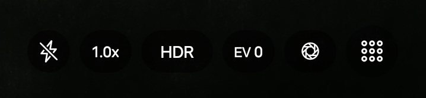
底部控制栏提供拍摄相关的核心操作：
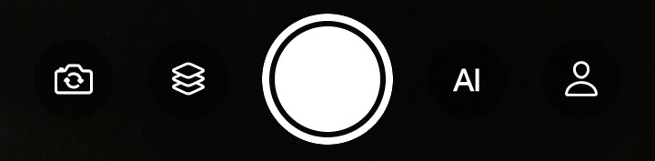
基于 MediaPipe 目标检测和 EfficientNet 图像分类的协同推理，自动识别当前拍摄环境：
💡 AI 场景检测：开启后自动识别当前场景，快门上方会显示 AI 检测到的物体分类及推荐模式。
所有 AI 推理均在设备端本地完成，无需网络连接，保护隐私安全。
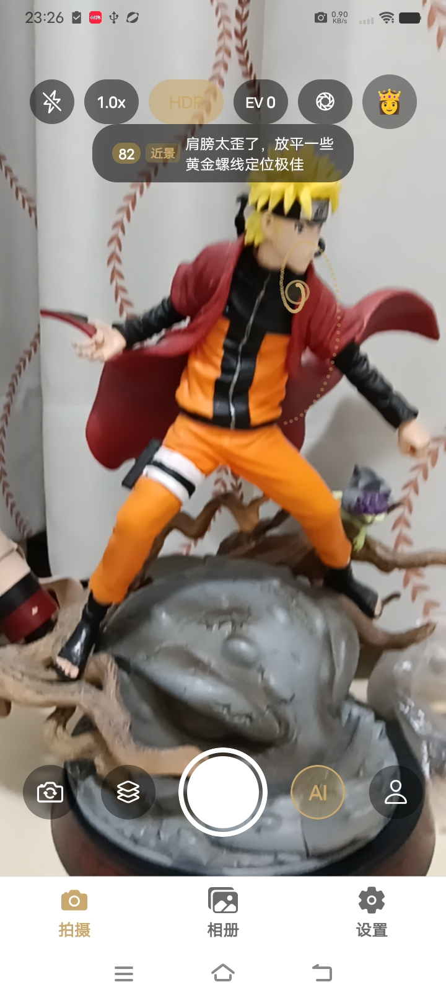
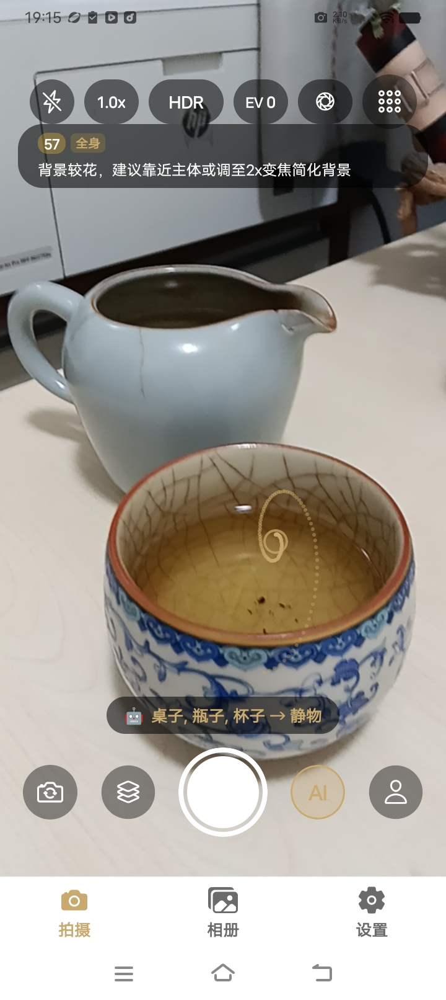
在取景框上叠加金色轮廓参考图，帮助被拍者找到姿势灵感：
内置 80+ 姿势模板，覆盖单人、双人、多人场景。
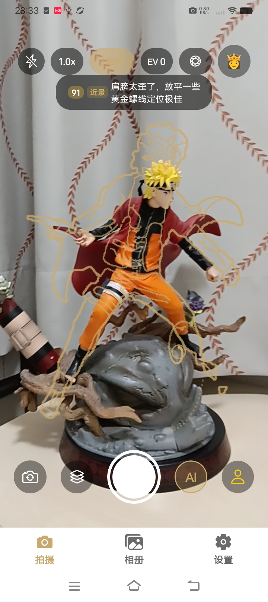
快门左边的按钮控制连拍模式，点击一次是三连拍，点击两次是五连拍，点击三次是关掉连拍模式。
设置页面可以切换连拍模式的间隔，短间隔一般用于多张抓拍高速运动，长间隔可以用来自拍。
拍摄后进入相册，对照片进行精细调整，让成片更完美。
点击底部「相册」标签页，查看所有拍摄的照片。点击任意照片进入大图预览。
点击编辑图标进入编辑工具栏。
调整构图和方向，支持自由的裁剪比例、任意角度旋转以及水平/垂直翻转。
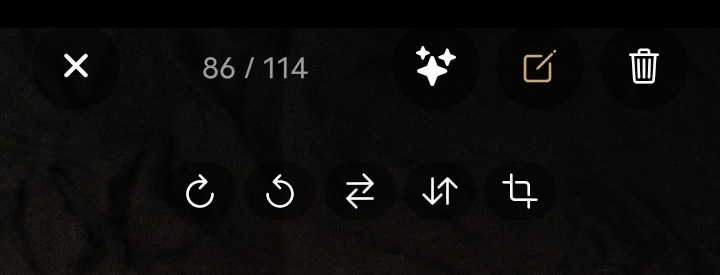
点击 ✨ 图标进入美化模式，基于 Skia GPU Shader 实时处理：
所有调整实时预览，可一键切换原片对比效果。
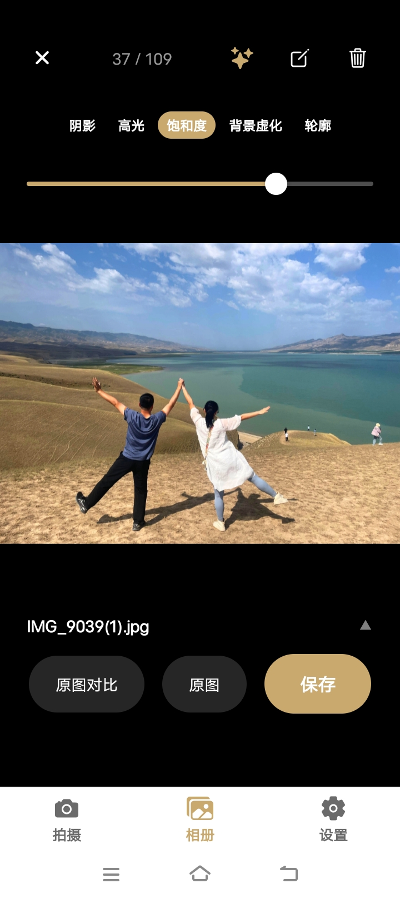
为照片添加景深效果，模拟大光圈拍摄：
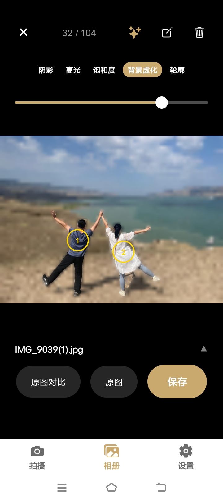
自动识别人物主体并生成金色轮廓描边，可作为姿势参考图导入：
生成的轮廓图可导入姿势库，方便日后调用。
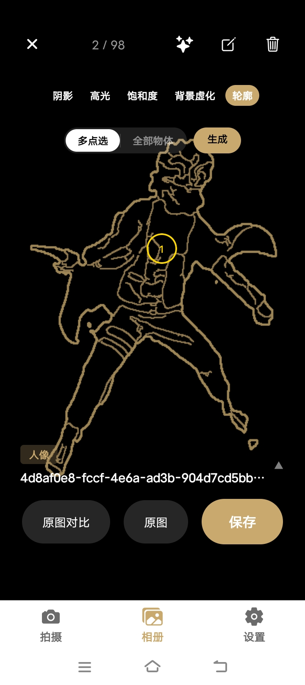
完成编辑后点击「Save」保存编辑结果。所有处理均在本地完成，照片保存到系统相册。
内置 80+ 姿势模板，支持自定义导入与标签管理。
应用内置 80+ 专业姿势轮廓图，按以下维度筛选：
选中姿势图后，点击即可叠加到取景框使用。
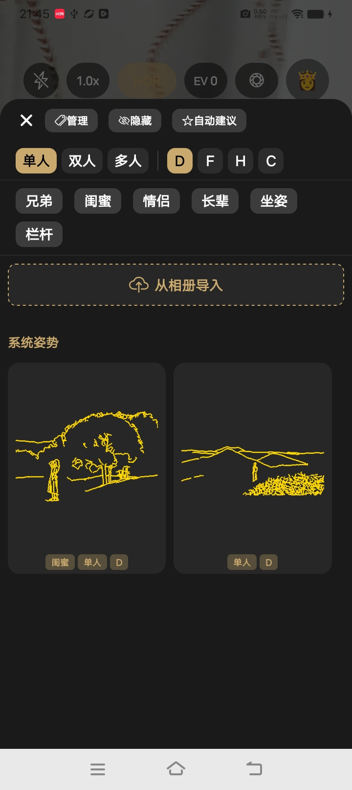
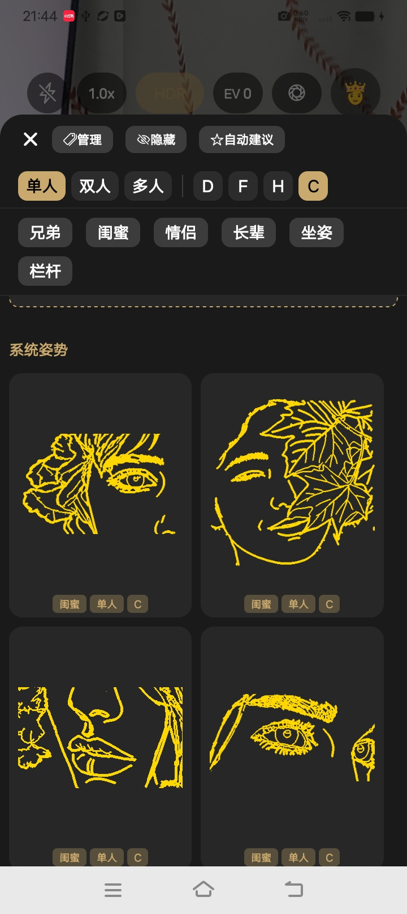
「我的」标签页支持从相册导入用户自己生成的姿势轮廓图（通过黄金轮廓描边功能生成）。
导入后即可像系统姿势一样在拍照时使用。
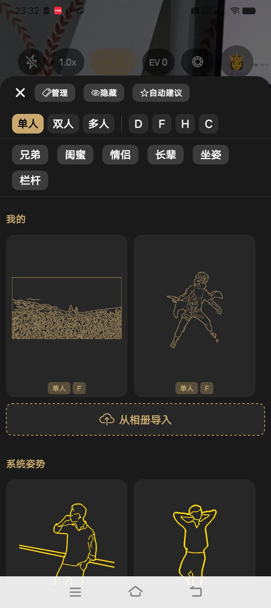
长按姿势轮廓图可编辑标签。标签说明：
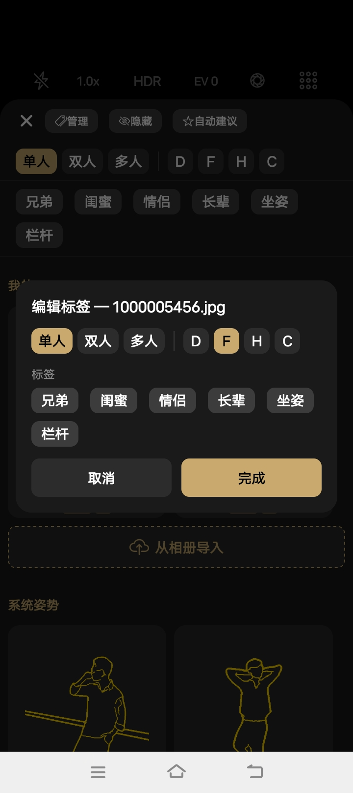
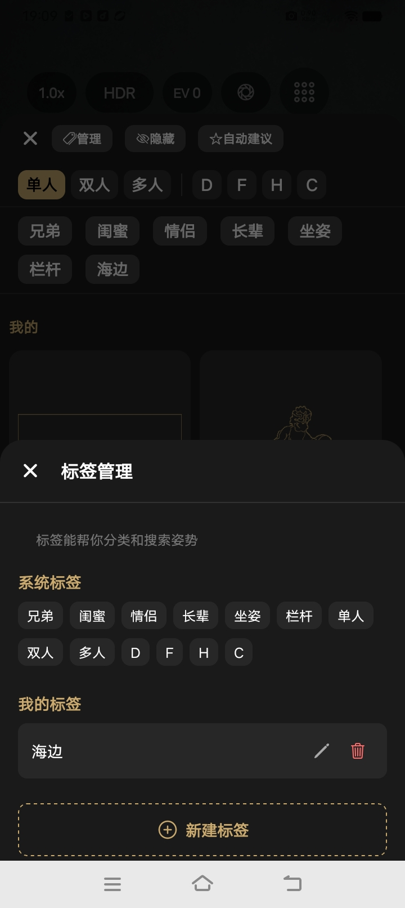
在设置标签页中调整应用参数。
查看使用到期时间和购买状态，可通过付费墙解锁完整功能。
选择拍摄照片的压缩质量和分辨率，平衡画质与存储空间。
切换连拍模式的拍摄间隔：短间隔适合高速运动抓拍，长间隔适合自拍。
选择取景框叠加的参考线类型：三分法 / 黄金螺旋 / 对称 / 三角 / 对角线。
用户留言